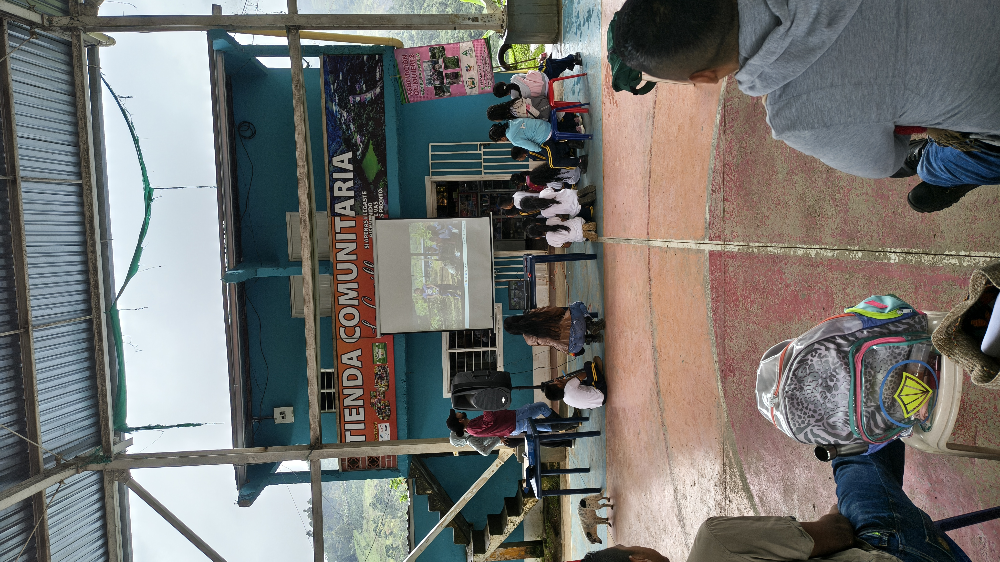

🌱 ASOMUELLAS
🌱 (Asociación de Mujeres Dejando Huellas de Amor por el Campo)
Vivero Comunitario
Vereda La Capilla, Corregimiento Los Andes
Corinto, Cauca
Vivero Comunitario
Vereda La Capilla, Corregimiento Los Andes
Corinto, Cauca
6 años
6.000 árboles
| Grupo | Cantidad |
|---|---|
| 👧 Niñas | - |
| 👦 Niños | - |
| 👩 Mujeres adultas | 6 |
| 👨 Hombres adultos | 2 |
| Total | 8 |
Asomuellas es una organización comunitaria comprometida con la restauración ambiental, la protección de los nacimientos de agua y el fortalecimiento del tejido social en el territorio. Su trabajo combina la producción de material vegetal con principios de solidaridad, inclusión y participación comunitaria.
La asociación promueve una visión amplia del desarrollo rural, integrando mujeres cabeza de hogar, jóvenes, personas mayores, población diversa y personas con discapacidad en torno al cuidado del ambiente y la construcción colectiva de oportunidades.
El vivero nació en 2020 gracias a la iniciativa de un grupo de personas preocupadas por la pérdida de bosques, el deterioro ambiental y la necesidad de proteger los recursos naturales del territorio.
Inicialmente el proceso reunió a 22 integrantes que compartían el interés por promover la reforestación, el cuidado de los nacimientos de agua y la educación ambiental comunitaria. Con el paso del tiempo el grupo se consolidó y en 2023 decidió formalizarse legalmente para acceder a proyectos y fortalecer su sostenibilidad. Esta decisión permitió ampliar su capacidad de gestión y acceder a nuevas oportunidades institucionales.
Actualmente Asomuellas se proyecta como una organización comunitaria con vocación ambiental y social, capaz de generar beneficios tanto para el territorio como para sus integrantes.
El vivero funciona mediante una organización horizontal y participativa. Cada quince días se realizan reuniones donde los integrantes planifican actividades como:
La comunicación cotidiana se realiza principalmente mediante grupos de WhatsApp, facilitando la coordinación permanente de las actividades. La ausencia de jerarquías rígidas ha permitido consolidar una dinámica flexible basada en la confianza, el compromiso y la corresponsabilidad.
El vivero produce especies forestales, protectoras, ornamentales y de interés comunitario para procesos de restauración ecológica y protección de fuentes hídricas.
| Nombre Común | Nombre Cientifico |
|---|---|
| Nacedero | Trichanthera gigantea |
| Balso | Ochroma pyramidale |
| Chicalá | Tecoma stans |
| Cedro Rosado | Cedrela odorata |
| Guamo Machete | Inga spectabilis |
| Iraca | Carludovica palmata |
| Lechero rojo | Euphorbia cotinifilia |
| Gualanday | Jacaranda caucana |
| Guayacán Rosado | Tabebuia rosea |
| Guayacán amarillo | Handroanthus crhysantus |
| Guayacán de Manizales | Lafoensia acuminata |
| Chachafruto | Erythrina edulis |




Responsable del proceso: Carmelina Cuetia
Rol: Lidereza Comunitaria
Teléfono: [TELEFONO]
Correo: [CORREO]